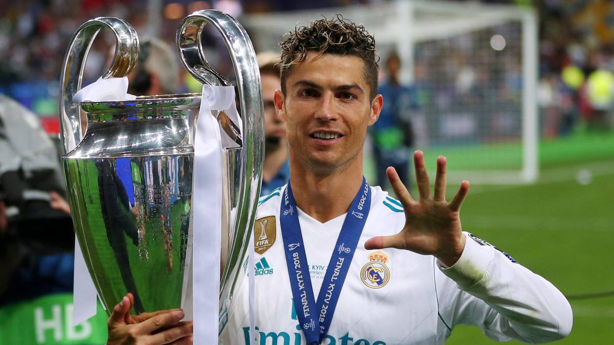

Una de las cosas que nos permite este tiempo inédito de crisis sanitaria que ha interrumpido el fútbol es el de hacer análisis y repasos. Por eso nos detenemos en clasificaciones como la que ahora ofrecemos, que pueden actualizarse próximamente.
Así, hemos querido comprobar de nuevo cuáles son los máximos goleadores en la historia del Real Madrid, en partidos oficiales. Y como era de esperar, muchos ya saben que Cristiano Ronaldo dejó muy alto el listón antes de su salida en 2018 rumbo a la Juventus.
Le siguen los otros dos grandes símbolos en la centenaria historia del club, como son Raúl y Alfredo Di Stefano. La santísima trinidad del madridismo. Entre los 10 primeros está también Karim Benzema como único jugador actual.
Maximo goleador del club

Cristiano Ronaldo es ya el máximo goleador de toda la historia del Real Madrid. El portugués llegó al club blanco en la campaña 2009-10 procedente del Manchester United como fichaje estrella de Florentino Pérez, que lo quería convertir en el mejor jugador del mundo. Y CR7, con sus 30 años, le está devolviendo la confianza al presidente.
Ayer, con sus dos goles ante el Malmoe, sumaba 324 en todas las competiciones y se convertía en el futbolista con más goles de toda la historia del Madrid, superando a Raúl González. Algunos medios le conceden al ariete luso un gol menos (323) por la eterna discusión que surge del partido de la temporada 2010-11 ante la Real Sociedad, en la que se anotó a Cristiano como tanto un balón que pagó en Pepe antes de colarse en la portería. En todo caso, el debate no tiene mucho sentido dado que Cristiano Ronaldo va a marcar más goles con el Madrd esta temporada, desmarcándose al frente de la lista.
El mérito del 7 blanco es que el record de los 324 goles los ha convertido en muchos menos partidos que sus precedesores. Raúl, por ejemplo, anotó los 323 en 741 partidos, mientras que el internacional portugués solamente ha necesitado 308 encuentros para marcarlos, lo que supone una media de más de un gol por partido.